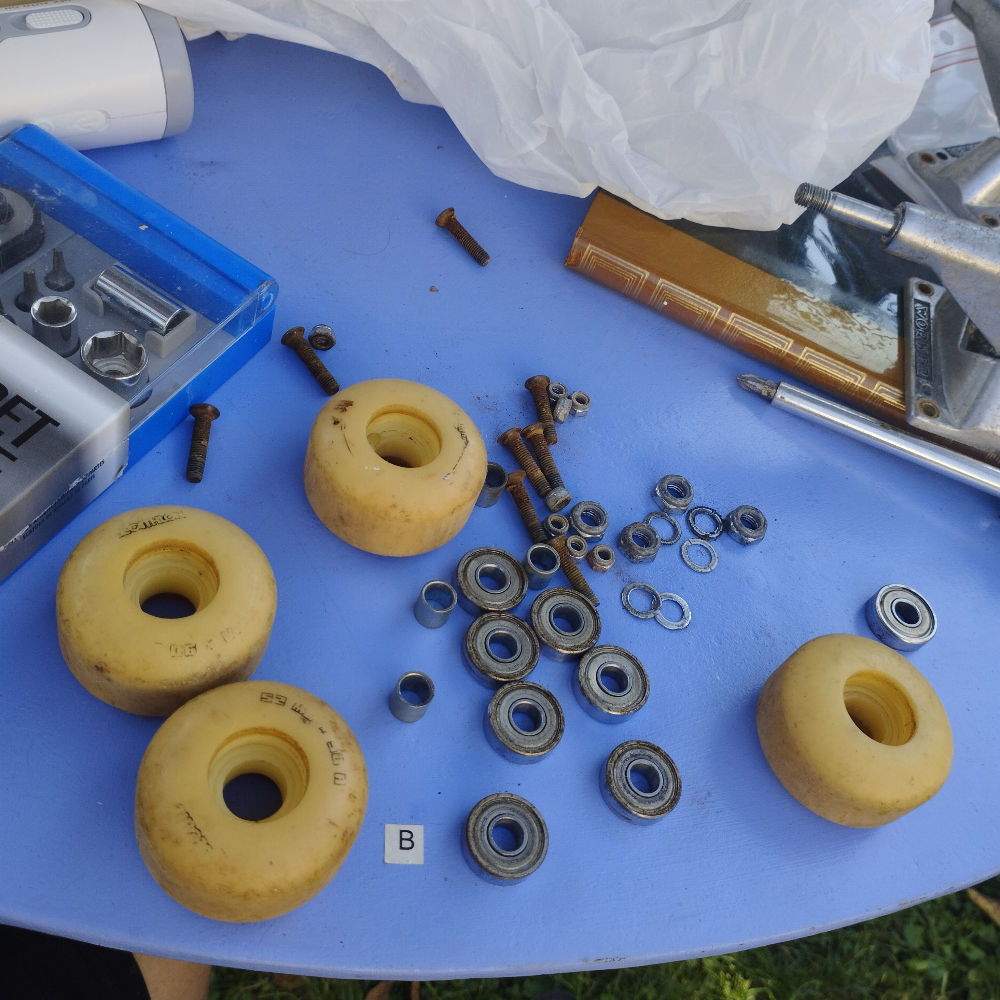
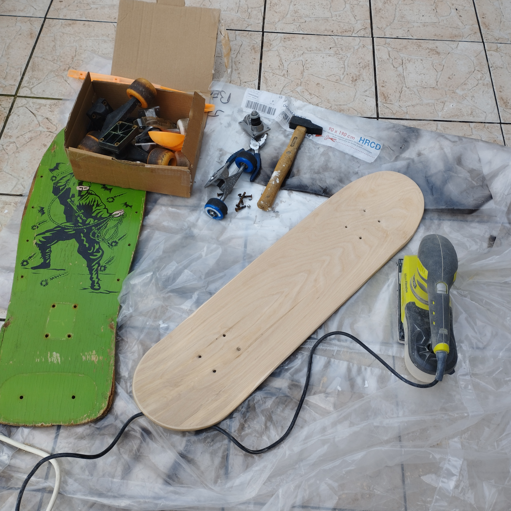
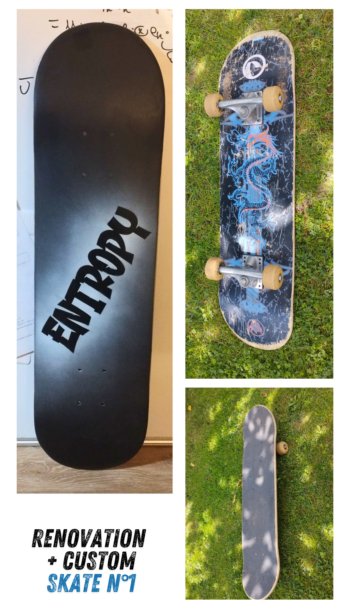
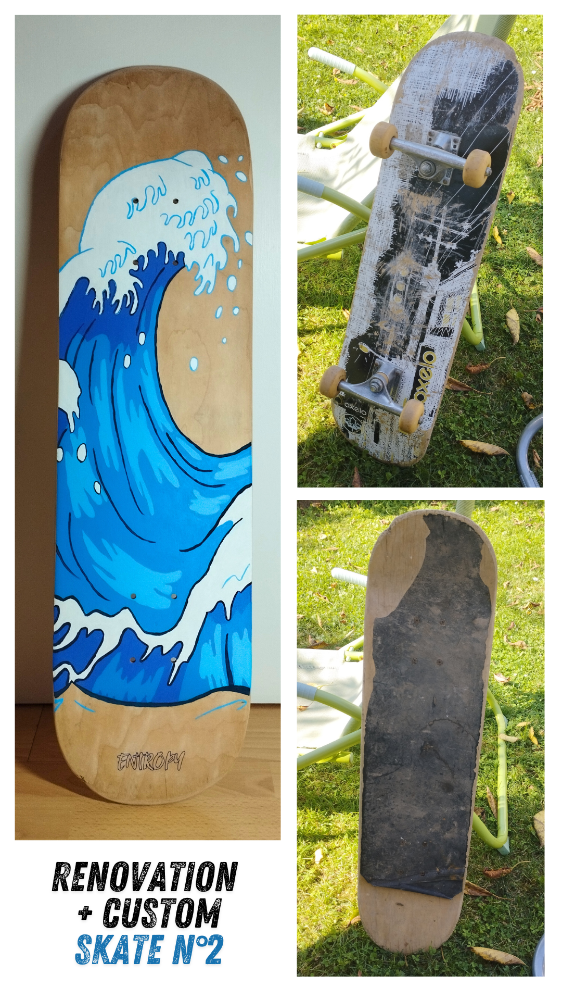
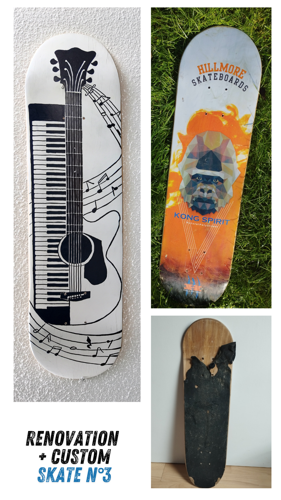

Pourquoi ces customs ?
Je récupère des planches de skate qui ne servent plus ou ne roulent plus, et je leur donne une seconde vie. Que ce soit pour rouler à nouveau ou en tant qu’éléments de décoration. C’est à la fois un projet créatif, durable et personnel.
Étapes de transformation
- Sélection de planches usées ou cassées
- Retrait du grip ou nettoyage de celui-ci selon l’état
- Nettoyage complet de la planche
- Démontage et nettoyage des roues, trucks, vis
- Ponçage intégral du dessous de la planche
- Travail du bois (si nécessaire) pour redonner une forme propre aux contours
- Création du design avec bombe, acrylique, croquis, pochoir ou peinture libre
En images : nettoyage & préparation


Quelques étapes de remise en état avant la customisation.
Quelques réalisations


Thème : Physique
Minimaliste autour du mot "entropy".



Thème : Glisse
Vagues inspirées de La Vague d’Hokusai.


Thème : Musique
Mélange piano et guitare.